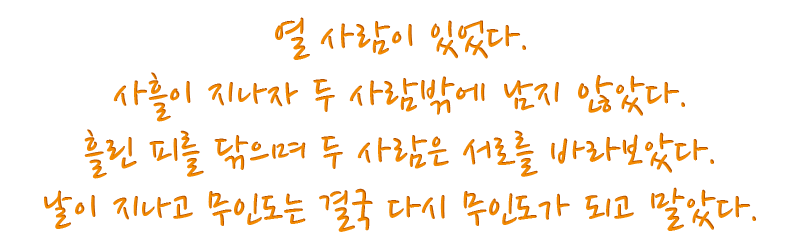

해오름달...
"이번 정답은 해오름달이었어!"
"문제가 답을 분명하게 알려주지 못 해서... 이번 건 정말 답을 찾기가 어려웠어."
"악보 속의 자음과 모음 중 일부가 빛의 3원색인 빨강, 초록, 파랑으로 이루어져 있었지."
"그리고 이걸 조합해서 글자를 만드는 건 곧 색의 조합을 의미하는 것이기도 해."
"즉, 색의 조합이 마젠타, 시안, 화이트가 되는 글자가 정답이 되는 글자인 거야."
"색카드의 순서는 글자의 배치 순서를 의미하는 거였고, 그렇게 해서 나온 글자가 바로 '해오름달'인 거지."
너무 더러운 문제였지만... 어쨌든 풀어냈다.
정답을 입력하자 다음 페이지로 넘어가며, 세 번째 미궁을 탈출할 수 있었다.
해오름달이라는 정답 덕분인지는 모르겠지만, 페이지가 다시 흰색으로 바뀌면서 눈이 아주 환해졌다.
너무 밝아져서 눈이 아팠다.
이거 제대로 된 거 맞는 거지...?
제대로 된 게 맞는지 의심스러웠지만, 일단은 마저 탈출하기 위해 페이지를 살펴보니 벽에 다음과 같은 글이 새겨져 있었다.

Hint: 1등의 집합.
Copyrightⓒ 다락. All rights reserved.